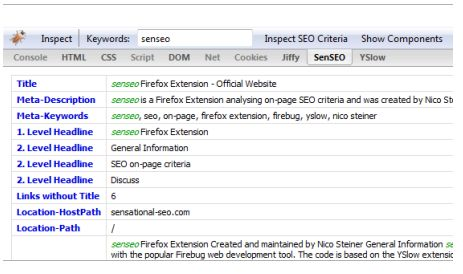
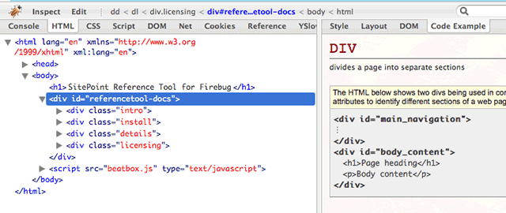
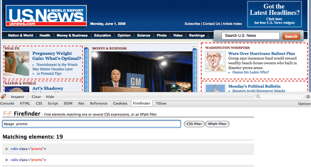
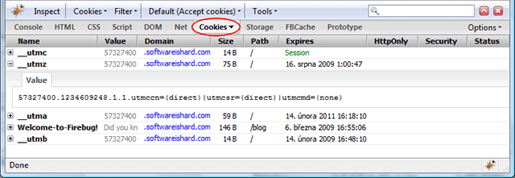
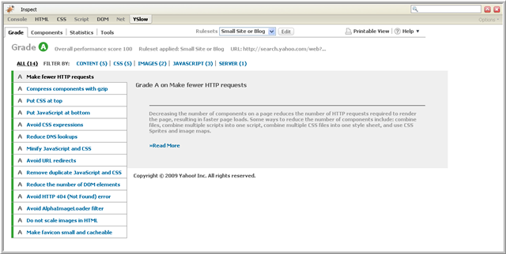

Today has been an interesting weather day. I was awoken at 6am by one loud thunderclap followed by several long, low rumbles. Everything was fine on my way into work and the sun even came out during the day. But near the end of the day, I looked out the window and saw it was ominously dark. So naturally I decided to venture outside and take some pictures on my phone.
You can see how strong these storms were by looking at the radar. So I decided to hunker down at work until the thunder died down.
Of course the Metro was all kinds of backed up. Go figure. Hopefully tomorrow will be less stormy.
Firebug started as an indispensable Firefox extension which takes web development to a new level. But after 2 years since it’s initial 1.0 release, Firebug has grown into a platform with a host of extensions built right on top of it. Here are my top 5 Firebug extensions that every web developer should have installed.
#5 SenSEO – SenSEO is a handy checklist of key SEO criteria. This Firebug extension rates your page on a scale of 100 against Google’s webmaster guidelines. SenSEO is most important right before a big launch to catch any simple tweaks that you may have overlooked during development.

#4 CodeBurner – CodeBurner is an HTML and CSS reference right at your fingertips while you debug. It adds a Code Example tab which gives a brief description of the HTML tag or CSS property you have highlighted as well as a code sample so you can see the recommended usage. If that’s not enough, CodeBurner provides a link to the Sitepoint reference page which has everything you could ever want to know. Man, I wish I had this extension when I was learning HTML and CSS (let alone Firebug).

#3 FireFind – FireFind does only one thing but it does it well: finding elements. Using a CSS selector or XPath statement, FireFind will highlight all of the matching elements on the page. This makes it a breeze to test CSS selectors with your site right in front of you. To boot, it also features a count of all the elements found. Even though this is possible through Firebug’s console tab when any popular JavaScript library is included, FireFind makes the process straight-forward and painless.

#2 FireCookie – If you have ever had to debug JavaScript cookies then you’ll wonder how you got by without this extension. FireCookie lets you inspect and edit cookies on the fly including permissions, values, and the expiration time. You can even sort all of your cookies as well as filter them out by domain. And when testing a script for your audience that has cookies disabled, FireCookie provides a simple option to disable cookies globally or just for the current domain. Now working with cookies doesn’t have to be such a stale experience.

#1 YSlow – Serious web developers are obsessed with performance and YSlow provides a smorgasbord of tools for measuring the speed of a site. YSlow is built around 34 best practices for speeding up a website which is the result of extensive research by the Yahoo Performance team. The extension provides a letter grade of each practice with advice on how to squeeze out every little bit of extra performance.

Another handy view is the Components tool which gives you an insight into all of the componets of the page. There are a bevy of stats that can be analyzed to pinpoint bloated waste.
Finally, the statistics tool gives insight into the weight of your page for users with an empty cache and a primed cache.
If you have never given much thought to the performance of your site, YSlow makes it easy to dive right in.
What are some of your favorite Firefox extensions geared towards web development?
The successor to the T-Mobile G1 has been unveiled by Google who gave out 4,000 of them to the attendees of the I/O Conference. After further prodding it is revealed that the phone uses a T-Mobile SIM card which pretty much seals the deal that it will land with the magenta carrier.
When you have a popular site that revolves around games that need dice rolled, a pseudo-random number generator just isn’t going to cut it. Computers have a hard time doing random things, which is why you have to fake it. GamesByEmail.com uses some 80,000+ dice rolls for its users and when they started complaining about the not-so-random dice rolls, the only thing to do was generate a machine that could do the real thing called the dice-o-matic.
The dice-o-matic is a 7 foot tall conveyor belt capable of rolling the 200 dice in the machine four times a minute, totaling over 1,330,000 rolls a day. A camera processes the row of dice at the top of the conveyor belt before they are dropped onto a twisty ramp where they roll all the way down again.
It’s an interesting project for such a seemingly simple task of rolling a die.
The folks at Newsweek unveiled a new redesign for their website today, nearly one and a half years since their last one. From a post about the new changes, the redesign aims to help visitors sift through the “flood of information on news and events every minute of every day” by “continuously filter[ing] it to find the most important stories and concepts for our audience” while “embrace[ing] the best work of other journalists around the Web and the most thoughtful questions and comments of our readers” in order to “create a forum for a continuous – and continuously worthwhile – conversation about key events and issues”. If only their writing was as simple as their new header.
The new Newsweek header (top) is much cleaner with a softer tone and less emphasis on the bold red associated with the magazine. Simple, clean headers seem to be a rising trend on news sites these days as usability and user experience become more of a focus. The old header (bottom) had a sense of authority while this new header design is toned down, as if to convey a lack of confidence in their place in the world. I am not a fan of the rotating headline ticker which clutters up the otherwise clean navigation.
The content on the homepage is also a cluttered eye sore. There is no clear structure to the information and the auto-rotating carousel of feature stories is distracting. I dig the effort to link out to external sources. This is what the web is all about but it does come off as Newsweek giving up on its quest to be a news leader. This could have been executed better to complement their own content rather than outshine it.
My biggest problem is it is impossible to scan the homepage. The content appears to be laid out in a random order like an amateur scrap book. There is no central focal point except for that ginormous 336×850 ad on the right. Come on Newsweek, don’t you know about the F shaped reading pattern on the web? Why would the headlines be aligned along the right side of the page?
It still appears Newsweek is a print-focused organization with the attitude of “if you put it on the page, readers will read it”. Looking over at the old design, it seems this redesign is a step-back. In it’s efforts to be a guiding hand in filtering the flood of news, Newsweek has become nothing more than a dam clogging the flow of information. My advice: turn Newsweek.com into a repository of articles from the magazine and focus on that. The world doesn’t need an old media publication half-ass its web offerings.
Speaking of the mashup, the song is so good. It’s an electronic piece of which 90% is composed using sounds recorded from the Disney film ‘Alice In Wonderland’. The creator was nice enough to share a free MP3 download of the song which has gained over 2 million views on YouTube. I must have listened to the song 100 times since Sunday! It reminds me of Singin’ In The Rain by Mint Royale which was featured in a sweet VW car commercial.
With all of the turmoil about the future of journalism, the New York Times is taking a proactive role in staking out it’s future in what might be a newspaper-less world. Today the company released a downloadable Adobe Air application that brings together the immediacy of the online world with the serendipity and browsing of the physical world. See a video demo of the application in action.
The Times Reader 2.0 is a slick product with an advertising and freemium business model. The tool offers some sections for free, like the front page, while charging $14.95 a month for access to others. John Biggs from Techcrunch is thinking about making the switch to all digital from paper delivery which is costing him $40 a month in Brooklyn. I’m curious as to how many people will put up with a seperate app dedicated to news sitting next to their web browser and e-mail client. And how many will be willing to shell out $15 a month for the same content that is already available for free on their website.
I think this is the first step to the New York Times setting up a pay wall like the Wall Street Journal. Unlike the Wall Street Journal, The New York Times looks to be pushing a monthly fee over a micro-payment business model which will ultimatelyfail.
The other interesting idea involved the Research and Development group at the newspaper. First off, the fact that a large media company has a R&D group boggles my mind but it totally makes sense to tackle the new technology that will be shaping their business in the coming years head on. Second, the New York Times is very interested in making their content work on the slew of portable media devices that are popping up everywhere like netbooks, the Kindle, and mobile phones. The video below taken by the Nieman Journalism Lab shows how they’re experimenting with e-ink readers and figuring out how their content will work on devices that aren’t even invented yet.
The future of media is not a single medium with one or two supporting business models, but one with many outlets tailored to different devices with just as many different ways to monetize it. The New York Times is building the infrastructure to handle this, it’s the smaller news outlets that are going to have a tough time adopting to this new, fragmented world.


{kind=link}